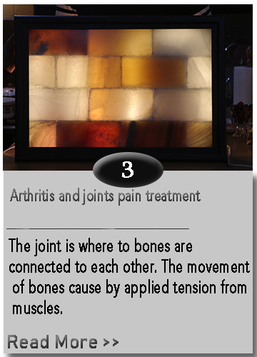

The term Halotherapy comes from Greek word “halos” which means salt. Halotherapy means applying dry salt in order to cure various diseases in
a way that the patient enters in a room full covered with salt and inhale salt tiny particles. As a matter of fact, different forms of therapy
with salt is not a new discovery, since the Ancient geeks realized that salt caves and mines has incredible and positive effects on respiratory
and mental diseases improvement. They realized that the persons who worked in the salt mines had never been faced with respiratory diseases.
In 1843, Halotherapy have been used for the first time as the medical method by a polish doctor Felix Buchowski. He claimed the particles of
saturated dry salt in the air of salt mine can help and improve health condition of people who have aspiration problems. By observing miners
who work in the salt mine they realized that they have more strong immune system against respiratory disease, and on the other hand patients
with respiratory problems get cure by breathing inside such salt mine. This knowledge applied empirically over years and also during world wars
German army send their infantry to stay for a while in salt and mine cave before wars due to breathing saturated salt air and strengthen their
soldier's lungs that helps soldiers to bare pressures better and being more patient.
In1982 Halotherapy was invented in Soviet Union for the first time. Since that millions people around the world have being using this method
to cure their respiratory diseases like asthma, obstructive pulmonary diseases, chronic coughing and etc. Since 2009 applying this method
got popular in European countries and north America, japan and some other countries.
The artificial caves included rooms made by salt bricks had been built in 1980. All the researchers believe that the injection of salt particles
in air as the main factor of this method efficiency, additionally during first years of 1990s in Russia, halo generators was applied in this
caves in order to increase the effect of salt rooms, the air injected from generators are clean, dry and uncontaminated. European countries
have started to construct salt rooms since 2009.
Regarding fast developing of technology and raising of environmental pollutant, the rate of rare urbanization diseases is considerably increasing.
Thus, the air pollution and respiratory diseases are known as the two most important problems of the people all over the world. Since the salt
rooms have great influence on improvement of the respiratory diseases, we can dramatically apply them as means of prevention and therapy.
In addition to industrial impurity existing in the air such as smoke of factories, cars, industrial machines, dusts of metropolises and … which lead to spoil
of pure air chemical balance and to inhale of polluted air in the industrial metropolises, using the electrical devices for example computers,
televisions, phones and mobiles, high voltage networks and environment pollution lead to production of a large amount of positive ion that
causing the electrical imbalance of environment’s ions. The caves air is full of the negative ions and other elements like Sodium, Potassium,
Magnesium, Calcium and different mineral materials which during the therapy period has been naturally absorbed by the body through inhaling
the saturated air of these negative ions. All of these elements are essential for body health and the accurate performance of organs during
the all ages.
The Mehraeen Company established in 1397. The main work of this company is analyzing the chemical and physical behavior of salt and salt stone and
also issues related to Halotherapy. This company with benefit of its specialists and experienced personnel and high technology has set up the production
line of salt materials due to construct salt structures. It also researches, identifies, produces, sells and exports all type of edible and industrial
salts. The desired interaction of company with active salt mines and factories in Iran (Semnan/Garmsa) and health, sport and tourism centers lead the
company into its main purpose that includes distribution of mineral edible salt inside and outside of the country and construction of salt structures
with high quality and export of the salt materials, too. The company most important achievement is the introduction of health and therapy nature of
mineral edible salt and the considerable effect of salt structures on the treatment of diseases to Iranian and the other people all around the
world.
Inhale diseases treatment and Respiratory system reinforcement
Halotherapy is usually considered for therapy of asthma, bronchitis, respiratory tract swelling, seasonal allergy, ear infection, and cystic fibrosis.
The natural salt has antibacterial and anti-inflammatory characteristic that cause disinfection of the respiratory tract. The salt aerosol has
been diffused by Dry Saline Diffuser medical device through the atmosphere of salt room and inter to the respiratory tract and decrease the amount
of additional water in the lung inner walls and balance the amount of superficial fluid?? in the lung inner walls and so these walls return to their
natural state and become thin and eventually the lung volume and respiratory system efficiency will be increased. In the other hand, salt reinforce the
nasal active mucosylated coverage. So regularly Halotherapy lead to healthier breathing and respiratory system reinforcement.
Skin diseases treatment and skin texture restoration
When salt aerosol in the air of salt room sit on the body skin, start to peeling in a gentle manner. Halotherapy is so effective for acne prevention
and peeling of the skin dense layers. They also help to balance the skin PH and reinforce the skin protective wall. The salt aerosols have disinfection
nature and lead to opening of pores through cleaning of the poisons and dead germs on the skin, thus cellular respiration will increase and also the
absorption of skin crème, lotions and serums will be easier. Regarding the Halotherapy anti-inflammatory characteristic, the skin redness and
inflammation will be considerably decreased and care the skin against diseases like acne, eczema and psoriasis. The Halotherapy is so helpful for
improvement of swellings caused by under skin inflammation and excesses the reconstruction speed of skin layers after surgical operations. The salt
has antioxidant characteristic and can react with skin free radicals and finally make the skin fresher and shinier. The persons with allergic
and respiratory disease usually suffer from damaged and inflamed skins since the respiratory and skin systems closely related to each other.
The Halotherapy purify the lymphatic fluid through respiratory tracts disinfection and in this way reinforce the immune system. When the immune
system be reinforced, the sensitivity percentage will be decrease and the therapy against the skin irritators, allergy and disorders will be more
efficient.

Arthritis and joints pain treatment
The joint is where to bones are connected to each other. The movement of bones cause by applied tension from muscles.
There is a little of a dense and sluggish liquid in the joint that it’s role is to decrease friction between bones.
The adequate amount of this liquid make joint healthy but if this liquid exceeds the normal amount cause swelling and pain.
and if the additional amount of this liquid sediment due to coldness, will make it harden which lead to rheumatoid arthritis, exactly like
the water that freezes. Since salt has dry and warm and moister absorbing nature, can absorb hardened liquid from joint and warm the body.
So the warmth nature of salt has the effect of a painkiller for joint pain in short terms and can cure the pain in long terms.
Depression and Stress Treatment, and making more happiness
Our brains make waves with 8 hertz naturally, while equipment such as computer, TV, cloth drier, fiber of carpets, microwave oven, hair drier,
air conditioner, florescent lamp and others make waves with 100 to 160 hertz. It means that our body is exposed to 20 times more electromagnetic
waves that lead to insomnia, stress, distraction, exhaustion, week immune system, blood pressure. Additionally, the accumulation of positive ion
creates the flow of free radicals that can cause cancer. On the other hand, the design of our houses and offices has the less chance to enter
negative ion, and air pollution, traffics make the atmosphere of outside full of positive ions. The negative ion effects to human health is invers
of positive ones. They can absorb pollutants and other allergic elements and make them fall down instead of floating in the air. They also could bound
with microorganism and virus and cleaning the air. There are plenty of negative ion in natural area like jangle, rivers and sea side and this is why
you feel cheerful in such places. The increasing of negative ions in the life environment have great influence on people health happier lifestyle.
There are lots of Haloterapy centers in the world that helping people to treat their pressures and anxiety.
Expertise and Skill in Selection Mineral Salt Rock Due to Build Salt Constructions
Despite decorative stones that break down to distinctive pieces, salt rock because of explosion in the mines are collected in form of clods and they
have to be cut in shape of demanded blocks. Cutting them to an accurate shape and similar size needs skill and knowledge of stones behavior.
In order to obtain the best shape, design and condition that include the best transparency, the other professional skills are needed. And also
choosing the best existing salt stone in the mines for the most beautiful and desired construction is so important. The more crystalized
and aggregated salt stone, the more transparence constructions will be produced. As grading of stones getting smaller the durability of them against
moisture and pressure will be increased. So, the stone with higher density has higher quality to be used, for instant the block of 20×10×5 dimension
is approximately 2.200 kg.
The Desired Design of This Salt Room
The front side of entrance room are built by most transparent and bright blocks to let light penetration make nice and calm appearance and atmosphere
for people. Following to the medical aspect of the room, the walls of other side are built by stones which has not trimmed and have natural shapes.
Since the negative ions of these salty crystals can absorb pollutants and other allergic elements and make them fall down instead of floating in
the air and make the atmosphere of the room cleaner. More roughly walls lead to more absorption pollutants and finally the room air become clean
and healthy rapidly. There are small pieces of salt stones all over the room due to walking barefoot. In fact, this is natural foot massage, because
the sole has many nerves and also the most choler (coldness) of blood sediment in the sole and get harden so that walking on uneven surface help to
first soften the skin and second remove the choler of blood, that lead to purify blood and increasing the blood circulation. Therefore, brain and
muscles receive more blood that make people feel more energy and relaxation. Middle of the room floor is covered fully with salt powder so, people
can walk or sleep on it because salt powder absorption power is much more than the small salt stones that can absorb more phlegm from body.
به مهر آیین سالت خوش آمدید
مزایای نمک درمانی
واژه نمک درمانی یا هالوتراپی برگرفته از کلمه یونانی “halos”، به معنی "نمک" است. نمک درمانی یعنی استفاده از نمک خشک جهت درمان بیماری های مختلف که عملکرد آن از طریق قرار دادن بیمار در یک اتاق پوشیده از نمک است و به بیمار این امکان را می دهد که در محیطی نمکی، ذرات ریز نمک را تنفس کند. شیوه های درمان با نمک در حقیقت کشف تازه ای نیست. یونانیان باستان در یافته بودند که معادن نمک و غارهای نمکی تاثیر مثبت و شگرفی بر روی بیماری های تنفسی و همچنین بهبود بیماری های روانی دارند؛ به نحوی که دریافته بودند افرادی که در معادن نمک کار می کنند هیچگاه به بیماری های تنفسی دچار نمی شوند. این افراد در گذشته های دور و با استفاده از این تاثیرات موفق به درمان بیماری های تنفسی و بهبود تنفس افراد مبتلا به این بیماری ها شده بودند.
بعدها نمک درمانی اولین بار به صورت رسمی توسط پزشک لهستانی به نام فلیکس بوچوکوسکی در سال 1843 به عنوان یک روش درمانی مورد استفاده قرار گرفت. وی اظهار نمود که هوا در معادن نمکی در منطقه ویلیکای لهستان با ذرههای خشک نمک اشباع شده که این هوا برای افرادی که به مشکلات تنفسی و ریوی مبتلا هستند، اثرات درمانی داشته و بهبودی بیماران را در پی دارد. به این معنی که پس از بررسی کارگران معدن نمک که در معرض هوای اشباع نمکی قرار داشتند ،مشاهده شد که آنان هرگز مبتلا به بیماری های تنفسی نمی گردند و از طرفی بیماران تنفسی نیز بهبودی بسیار قابل توجهی پس از تنفس در مجاورت هوای نمکی داشتند. در گذران سالها به صورت تجربی این دانش به کار گرفته شد و در بحبوحه جنگ های جهانی نیز آلمانی ها برای بهبود تنفس سربازان خود قبل از اعزام به جبهه های جنگ، مدتی آن ها را به غارها و معادن نمک می فرستادند تا قبل از جنگ، هوای اشباع از نمک را تنفس کنند؛ ریه هایشان قوی شده و نیز مانع عصبی شدن سربازان و تعدیل کننده فشار روانی آنان در طول جنگ و پس از آن باشد.
نمک درمانی به روش نوین، در سال 1982 در شوروی ابداع شد و از آن تاریخ تا به امروز میلیون ها نفر در سراسر دنیا از فواید این روش درمانی بدون دارو جهت درمان و بهبود بیماری هایی نظیر آسم، آلرژی، گرفتگی مجاری تنفسی، سرفه های مزمن و غیره بهره مند شده اند. موج دوم استفاده از روش های درمانی ابداع شده )نمک درمانی( و غارها و اطاق های نمکی از ابتدای سال 2۰۰9 شروع شده است. امروزه تقریباً در تمامی کشور های اروپایی، آمریکای شمالی )آمریکا و کانادا(، ژاپن و بسیاری از کشور های دیگر این روش برای بهبود سلامت افراد مورد استفاده قرار میگیرد و به سرعت در حال گسترش است.
درسال 1980 غارهای نمکی مصنوعی با آجر و بلوک های نمکی به شکل اتاق هایی ساخته شد. تقریبا همه پژوهشگران متّفق القول بر این عقیده هستند که عامل اصلی درمان در غارهای نمکی، افشانه های خشک نمک موجود در هوا با رطوبت و دمای خاص آن شرایط جوی است. با این آگاهی در اوایل سال های 1990 ژنراتورهای هالو (halo) در سن پترزبورگ روسیه به کار گرفته شدند. ژنراتورهای هالو افشانه های خشک نمک را به درون اطاقها می دمند و به این ترتیب شرایطی مشابه معادنها و غارهای طبیعی نمک به وجود می آورند. هوای ایجاد شده توسط این ژنراتورها کاملا تمیز، خشک، عاری از میکروب، و عاری از هرگونه مواد شیمیایی است. از سال 9۰۰2 کشورهای اروپایی شروع به ساخت اتاق های نمک نمودند و در این زمینه به تحقیق و پژوهش پرداختند.
به دلیل رشد سریع تکنولوژی و آلودگی زیست محیطی، ابتلای افراد به بیماریهای خاص تمدن و شهرنشینی بیشتر و بیشتر میشود .از طرفی هوای تنفسی در شهرهای بزرگ و صنعتی جهان، از نظر عناصر ضروری برای سلامت بدن، با کمبود اساسی مواجه است. به این ترتیب یکی از بزرگترین مشکلاتی که گریبانگیر مردم جهان شده، بحث آلودگی و بیماری های تنفسی است. بیماری های تنفسی و ریوی با یک سیر تصاعدی روز به روز در حال گسترش است. بنابراین اگر اتاق های نمک تاثیر شگفت انگیزی در درمان و مهار این بیماری ها داشته باشند، می توانند به لحاظ پیشگیری و حتی در مباحث درمانی نیز حائز اهمیت بسیار زیادی باشند.
علاوه بر ناخالصی های صنعتی موجود در هوا از قبیل دود کارخانجات، خودروها، ماشین آلات صنعتی، گرد و غبار در شهرهای بزرگ، دود سیگار و... که تعادل شیمیایی هوای سالم را بر هم می زنند و مردمان کلان شهرهای صنعتی را از استنشاق هوای پاک محروم می کنند، وسایل الکتریکی مورد استفاده نظیر تلویزیون، کامپیوتر، تلفن، موبایل، شبکههایی با ولتاژ بالا و آلودگی محیط زیست و... مقدار بسیار زیادی یون مثبت در محیط ایجاد میکنند که سبب عدم تعادل الکتریکی یونها محیط میشود .هوای درون غارها سرشار از یونهای منفی و نیز عناصری نظیر سدیم، پتاسیم، کلسیم، منیزیم و بسیاری از مواد معدنی دیگر است. این مواد در طول دوره درمان در غارها با تنفس هوای اشباع شده از یون منفی "به طور طبیعی" جذب بدن میشوند .این عناصر، برای سلامت بدن انسان و عملکرد درست اندامها در همه افراد و در همه سنین ضروری هستند.
شرکت "سازه های نمکی مهرآیین" شرکتی پیشگام و تخصصی در زمینه بررسی رفتار فیزیکی و شیمیایی نمک و سنگ نمک و نیز مباحث طبّ نمک و نمک درمانی است که در سال 1397 به ثبت رسیده است. این شرکت به تحقیق، شناسایی، معرفی، فرآوری، فروش و صادرات انواع نمک خوراکی و صنعتی می پردازد؛ همچنین با به کارگیری نیروهای متخصص و مجرب و نیز با در دست داشتن تکنولوژی پیشرفته، خط تولید مصالح نمکی جهت ساخت سازه های نمکی را راه اندازی نموده است؛ شرکت سازه های نمکی مهرآئین در حال حاضر از طرفی با معادن فعال و کارخانجات معتبر موجود در قطب نمک ایران (سمنان به ویژه گرمسار) و نیز از طرف دیگر با مراکز درمانی، ورزشی، گردشگری، رفاهی و... وارد تعاملات سازنده شده و در مسیری رو به رشد، جهت تحقق اهداف عالی و بلند مدت خویش گام بر می دارد. از جمله اهداف عالی این شرکت، توزیع نمک های معدنی خوراکی در کشور و خارج از کشور، ساخت سازه های نمکی با کیفیت عالی و قیمت مناسب و همچنین صادرات مصالح نمکی به خارج از ایران است. رهاورد فعالیت های گسترده این شرکت معرفی خاصیت درمانی و سلامت بخش نمک های معدنی خوراکی و نیز تأثیر اثبات شده سازه های نمکی در درمان برخی بیماری ها به مردم ایران و جهان و در نهایت برداشتن گامی موثر جهت اعتلای ایران عزیز است.
درمان بیماری های استنشاقی و تقویت سیستم تنفسی
نمک درمانی به طور معمول برای درمان آسم، برونشیت و نیز ورم مجاری تنفسی به کار می رود. همچنین برای حساسیت های فصلی، عفونت گوش، سیاه سرفه، فیبروز
کیستیک و ورم لوزه به کار می رود. نمک طبیعی حاوی خاصیت ضد باکتری و ضد التهابی است که موجب ضدعفونی شدن مجاری تنفسی می گردد. کریستال های ریز نمک )
ریزگردهای نمکی توسط دستگاه مخصوص در فضای اتاق نمکی پخش شده و وارد مخاط مجاری تنفسی می گردند؛ نمک در
مجاورت مخاط آغشته به لایه بسیار نازک از خود، موجب تقلیل آب متجمع شده اضافی در دیواره های درونی ریه ها شده به توازن مایع سطحی موجود در دیواره درونی
ریه ها می گردد. به این ترتیب دیواره های درونی ریه ها به حالت طبیعی خود بازگشته و نازک می گردد؛ لذا حجم درون ریه ها افزایش یافته و بازدهی دستگاه تنفسی فزون می گردد.
از طرفی نمک پوشش فعال ماکوسیلیاری بینی را تقویت می کند. بنابراین نمک درمانی به طور منظم، تنفس را سالم نموده و موجب تقویت دستگاه تنفسی می گردد.
درمان بیماری های پوستی و ترمیم بافت پوست
ریزگردهای نمکی موجود در هوای اتاق نمکی زمانیکه روی پوست می نشینند، به صورت ملایم و
موثری لایه برداری روی پوستی )به روش
از بین بردن سلول های مرده و
راکد روی سطح پوست( انجام می دهد. نمک درمانی در از بین بردن لایه های متراکم پوستی و پیشگیری از آکنه بسیار موثر است. همچنین به تعدیل و توازن Ph پوست کمک می کند و موجب تقویت دیواره حفاظتی پوست می شود .ریزگردهای نمکی خاصیت ضد عفونی کننده داشته و می تواند با
از بین بردن سموم و میکروب های مرده
روی پوست، موجب باز شدن منافذ پوستی شده؛ به این ترتیب از طرفی تنفس سلولی را افزایش داده و از طرفی دیگر جذب موادی همچون کرم ها، لوسیون ها و سرم
های پوستی را آسان تر کند. نمک درمانی به علت خاصیت ضد التهابی که دارد، موجب کاهش التهاب و قرمزی و کورک های پوستی می گردد
و به این ترتیب به مراقبت پوست در برابر بیماری های اکنه، اگزما و پسوریازیس کمک می کند. همچنین در درمان بیماری هایی از قبیل قرمزی و تحریک و خارش پوست و نیز ورم های حاصل از التهاب های زیر پوستی بسیار موثر است. نمک درمانی سرعت بازسازی لایه های پوست پس از عمل جراحی را افزایش می دهد.
نمک دارای خاصیت آنتی اکسیدان بوده و می تواند با رادیکال های آزاد پوست واکنش داده و به این ترتیب موجب جوانی پوست و درخشندگی و طراوت آن می شود.
کسانیکه از بیماری های تنفسی مانند آسم و آلرژی رنج می برند معمولاً دارای پوست های آسیب دیده و ملتهب هستند؛ به دلیل اینکه سیستم تنفسی و پوستی با یکدیگر در ارتباط هستند. نمک درمانی می تواند با ضد عفونی کردن مجاری تنفسی که پیشتر ذکر شد، موجب تصفیه مایع لنفاوی شده و به این ترتیب موجب تقویت شدن سیستم ایمنی بدن گردد. از طرفی تقویت سیستم ایمنی بدن موجب کاهش حساسیت ها شده و به این ترتیب به التیام پوست در مقابل آلرژی ها و تحریک کننده ها و اختلالات پوستی کمک می کند. یکی از اثرات دیگر نمک درمانی پوستی به صورت غیر مستقیم از طریق ایجاد آرامش روانی و کاهش استرس اتفاق می افتد. ناراحتی های پوستی اغلب با استرس تشدید می شوند؛ به این ترتیب فضای آرامبخش اتاق نمکی به واسطه تمدد اعصاب می تواند موجب داشتن پوستی بهتر و آسوده تر شود.
درمان بیماری های ورم و درد مفاصل و نیز عارضه های آرتروزی
مفصل جایی است که دو استخوان در کنار هم قرار می گیرند. حرکت استخوان ها در مفصل به علت کششی است که از طریق عضلات به آنها اعمال می شود .مقدار کمی از یک مایع غلیظ و لزج بین دو سر استخوان ها و در درون مفصل قرار گرفته که سطح غضروف را لیز کرده و اصطکاک بین دو سطح مفصلی را کم می کند. چنانچه میزان این مایع به اندازه باشد، سلامت مفصل برقرار است؛ اما چنانچه این مایع از بیشتر از میزان نرمال باشد، موجب ورم و درد می گردد. اگر این میزان مایع اضافی در مفاصل در اثر سرما رسوب کرد و سخت و سفت شد، تبدیل به آرتریت روماتوئید می شود. دقیقاً همانند آب که تبدیل به یخ می گردد. از آنجا که طبیعت نمک گرم و خشک بوده و بسیار رطوبت پسند است، می تواند آب وجود در محیط اطراف را جذب کند؛ لذا این توانایی را دارد که سردی و رطوبت را از عمق بدن بیرون کشد و به بدن گرمی و حرارت بخشد. بنابراین در اثر گذاشتن مفاصل دردناک درون پودر جامد نمک، آب سفت شده در مفاصل، ابتدا در اثر حرارت نمک نضج و نرم می گردد و سپس توسط نمک از بدن بیرون کشیده می شود و به این ترتیب اثر کوتاه مدت پودر نمک جامد، تسکین دردهای مفصلی و آرتروزی و اثر بلند مدت آن بهبودی این عارضه است.
درمان حالت های ناخوشایند روحی همچون استرس، افسردگی، خمودی و ایجاد حالت نشاط و آرامش
مغز ما به صورت عادی امواجی با سرعت 8 هرتز تولید میکند. در حالی که امواج تولید شده توسط تجهیزات الکتریکی نظیر موبایل، کامپیوتر، تلویزیون، خشک کن های لباس، الیاف فرش های ماشینی، مایکروویو، سشوآر، سیستم های تهویه هوای بسته، لامپ های فلورسنت و سایر تجهیزات برقی و کامپیوتری، همچنین اینترنت های وایرلس و به خصوص دستگاه پرینتر و ... چیزی حدود 1۰۰ الی 16۰ هرتز است. میبینیم که بدن در معرض امواجی تا 2۰ برابر معمول قرار میگیرد که نتیجه آن عصبی شدن ،بیخوابی یا کمخوابی، از بین رفتن و یا ضعیف شدن تمرکز ،خستگی، کاهش سطح انرژی، تنش، اضطراب، تحریک پذیری، ضعف سیستم ایمنی بدن و نیز فشار خون های ناشی از فشار عصبی است. علاوه بر تجمع یون های مثبت در محیط، جریانی از رادیکالهای آزاد هم به وجود میآید که در بدن میتواند منجر به ایجاد سرطان شود. از طرفی فضای خانه ها و ادارات به نحوی طراحی شده است که کمترین ورود هوای تازه و یون منفی در آن صورت می گیرد؛ پنجره ها کوچک انتخاب شده اند و آلودگی هوا و ترافیک بسیار زیاد امواج در شهرهای بزرگ نیز حتی هوای بیرون از خانه را آکنده از یون های مثبت کرده است.
یون های منفی برعکس یون های مثبت هستند و اثر معکوسی بر سلامت، خلق و خو و سطح انرژی انسان دارند. یون های منفی قادرند به طور استاتیکی ذرات موجود در هوا مانند گرد و غبار، کپک و دیگر آلاینده ها و مواد آلرژی زا را جذب کنند؛ با اتصال به آلاینده ها و مواد آلرژی زا به آنها یک بار منفی دهند و سبب شوند که این ذرات به جای معلق بودن در هوا، به زمین و یا نزدیکترین سطح موجود سقوط کنند. یون های منفی حتی می توانند با باکتری ها و ویروس های موجود در هوا اتصال برقرار کرده و به این طریق هوا را پاکیزه کنند. در محیط های طبیعی به ویژه در سواحل، جنگل ها و در نزدیکی آبشارها یون های منفی به وفور یافت می شوند و این ها محیط هایی هستند که شما به ندرت در آن ها احساس خستگی و افسردگی می کنید. با افزایش میزان یون های منفی در فضای زندگی، بسیاری از مردم شگفت زده شده و از مزایای یون های منفی برای سلامتی شان بهره مند خواهند شد. مراکز نمک درمانی و اتاق های نمک بسیاری نیز در سراسر دنیا وجود دارند که در زمینه درمان بیماری های حاصل از اضطراب و تنش های روحی و روانی فعالیت می کنند.
تخصص و مهارت لازم در انتخاب انواع سنگ های معدن نمک جهت ساخت سازه های نمکی
برخلاف سنگ نما و سایر سنگ های تزئینی که معمولاً در معادن با نظم ظاهری و به صورت صاف بریده می شوند، به علت وجوب عملیات انفجاری در معادن نمکی، سنگ های نمکی به صورت کلوخه هایی نامنظم هستند و لازم است که در دستگاه برش با تخصص و مهارت بسیاری برش داده شود و به شکل مکعب درآید؛ برای ساخت سازه های نمکی همه سنگ ها بایست میلیمتری هم اندازه باشند تا کوچک ترین شکافی میان بلوک های سازه وجود نداشته باشد و این کار نیاز به "شناخت از رفتار سنگ نمک" دارد. مقوله رعایت زیبایی در ساخت این بلوک ها، بحثی جداست! اینکه از کدامین قسمت های سنگ های نمکی چه طرح هایی انتخاب شوند و چه شرایطی را دارا باشند تا بتوانند نور را به زیبایی از خود عبور دهند، نیز نیاز به مهارتی دیگر دارد... هر چه دانه بندی سنگ نمک کریستالی و منظم باشد، عبور نور از آن بیشتر است؛ و در آخر اینکه انتخاب سنگ های شکسته شده میان تمامی سنگ نمک های موجود در معدن جهت ساخت سازه های با استحکام و زیبای نمکی، بسیار تخصصی است؛ اصولاً هر چه دانه بندی سنگ نمک ریزتر باشد، آن سنگ نمک محکم تر و بادوام تر است؛ هم فشار زیادی را می تواند تحمل کند و هم در مقابل رطوبت قدرت مقاوت بیشتری دارد .هر چه دانه بندی سنگ نمک ریزتر و باشد، وزن واحد حجمی یا وزن مخصوص آن بیشتر است آن سنگ ارزش به کار بردن در سازه نمکی پر دوام را دارد. به عنوان مثال میانگین وزن حجمی هر بلوک نمکی که در این سازه به کار خواهد رفت برای ابعاد 5 * 1۰ * 2۰ رقمی حدود 2۰۰/2 کیلوگرم است.
از طرفی سنگ ها پس از عملیات انفجاری در معدن نمک و پس از برش دادن، بایست شسته شوند. همانطور که ذکر شد هر چه دانه بندی سنگ نمک ریزتر باشد، مقاومت آن سنگ نمک در برابر رطوبت بیشتر است. به این معنی که به راحتی در آب حل نمی شود و ساختار جامد الکتروستیک نمکی بسیار متراکم تر و غیر قابل نفوذتر است. بنابراین این سنگ ها حتی پس از قرار گرفتن به مدت چند ساعت در آب، در آب حل نمی شوند. لذا پس از مرحله بُرش، شستشوی آنان به راحتی صورت پذیرفته و سنگ ها از براده ها و پودر نمکی آغشته شده، پاک گردیده و شفاف و تمیز می گردند .پس از مرحله شستشو، مرحله خشک کردن سنگ ها است. هر چه سنگ های شسته شده سریع تر خشک شوند، بهتر است. و پس از آن سلوفان نازکی روی سنگ ها نمکی کشیده می شود تا هنگام حل و نقل سنگ ها در مجاورت هم به یکدیگر آسیب نرسانند. خرده سنگ های نمکی که دور تا دور اتاق ریخته می شود نیز دو بار سَرند شده، شسته شده و کاملاً تمیز شده اند و گرد و خاک و آلودگی ندارند. همین طور پودر نمک مرکز کف اتاق نیز عاری از خاک و آلودگی است و کاملاً تمیز است.
علت سبک طراحی اتاق نمکی مورد نظر در این پروژه
ضلع رو به روی درب اتاق، ضلع "تابلو" در نظر گرفته شده است تا طرحی متفاوت از سایر دیوارها داشته باشد. این ضلع با داشتن بلوک های نمکی صاف و میزان نوری که این بلوک ها از خود عبور می دهند، حالت بسیار زیبایی داشته و به کمک حی بینایی، موجب آرامبخشی و تمدد اعصاب در فرد می شود.
سایر اضلاع اتاق به خاطر خواص درمانی که این اتاق دارد، با بلوک هایی که سطحی ناهموار و طبیعی دارند و برش نخورده و صاف نشده اند، پوشانده شده اند؛ به این علت که همانطور که پیشتر ذکر شد ،یون های منفی که از شبکه بلورهای نمکی جدا شده و در فضا پخش می گردند، قادرند به طور استاتیکی ذرات موجود در هوا مانند گرد و غبار، کپکها، ذرات میکروبی و دیگر آلاینده ها و مواد آلرژی زا را جذب کنند؛ با اتصال به آلاینده ها و مواد آلرژی زا به آنها یک بار منفی دهند و سبب شوند که این ذرات به جای معلق بودن در هوا، به علت باردار شدن ،به زمین و یا نزدیکترین سطح موجود سقوط کنند. )و دقیقاً به همین دلیل برای دوام هوای پاکیزه در اتاق نمکی، سنگ های نمکی هر چند ماه یکبار نیاز به گردگیری دارند تا دوباره آماده پذیرش آلاینده های موجود در فضای اتاق باشند و هوای آن را تمیز کنند(. هر چه دیوارهای نمکی ناهموارتر باشند ،احتمال نشست آلودگی ها بر روی فراز و نشیب های سنگی بیشتر می گردد و ذرات آسان تر از فضا بر روی سطح قرار می گیرند و فضای اتاق سریع تر سالم و پاک می گردد.
دور تا دور اتاق خرده سنگ های کوچکی که گوشه های تیز ندارند، ریخته شده است تا فرد بر روی آن با پاهای کاملاً برهنه راه رود بی آنکه اذیت شود. راه رفتن روی این سطح ناهموار همان ماساژ طبیعی کف پاست و از آنجا که سلسله اعصاب بسیار زیادی در کف پا وجود دارد، راه رفتن روی ناهمواری ها آرامش بسیار زیادی به همراه دارد. ضمن اینکه جنس این خرده سنگ ها نمک است و طبیعت نمک گرم و خشک است و سردی و رطوبت خون را بیرون می کشد؛ به این ترتیب حالت خوشایندی در فرد ایجاد می شود. از طرفی بیشتر سودای خون به علت جاذبه زمین در کف پا رسوب می کند و سفت می شود، لذا پیاده روی بر روی ناهمواری های خرده سنگ های نمکی اثر فوق العاده ای در - ابتدا نرم کردن و سپس از بین بردن - سودای غیر طبیعی خون داشته و موجب هم تصفیه شدن خون و هم تسریع گردش خون و اکسیژن رسانی بیشتر به بافتها به ویژه مغز می گردد و بنابراین حالت خوشایند و آرامشبخشی که در فرد ایجاد می شود، دوچندان می گردد. وسط کف اتاق نیز مملو از پودر نمک است که فرد بتواند بر روب پودر نمک راه رفته و یا بخوابد. چون سطح جذب پودر نمک به مراتب بیش از خورده سنگ نمکی است و می تواند میزان رطوبت )بلغم( نسبتاً بیشتری را از بدن خارج کند.

{kind=link}
{kind=link}